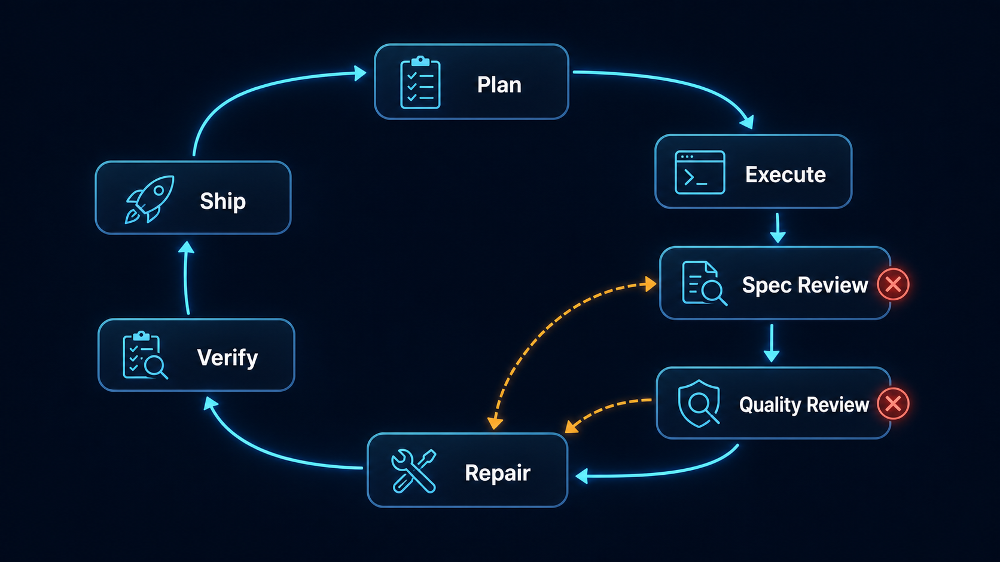
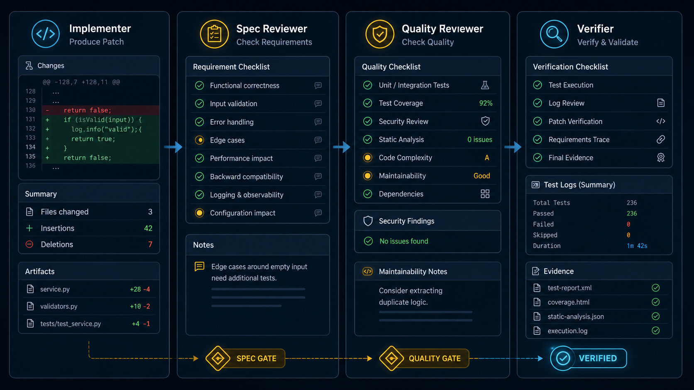
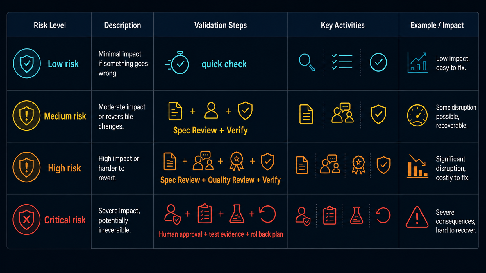

에이전트가 “모든 테스트를 통과했다”고 보고했다.
그런데 확인해보니 새로 만든 테스트 하나만 돌렸고, 기존 통합 테스트는 실행하지 않았다. 요구사항 중 하나였던 권한 체크도 빠져 있었다.
문제는 코드가 아예 망가진 것이 아니었다. 더 나빴다. 그럴듯하게 동작했고, 에이전트는 완료했다고 말했다.
이런 실패는 에러 로그처럼 시끄럽지 않다. 빌드가 깨지지도 않고, 화면이 바로 터지지도 않는다. 대신 자연어 보고서 안에서 조용히 묻힌다.
완료했습니다.
요구사항을 반영했습니다.
테스트도 통과했습니다.AI 에이전트를 쓰기 시작하면 처음에는 생성 속도에 놀란다. 코드를 만들고, 문서를 정리하고, 테스트도 작성한다. 하지만 어느 순간 병목이 바뀐다. 더 이상 핵심 질문은 “에이전트가 만들 수 있는가?”가 아니다.
더 중요한 질문은 이것이다.
에이전트가 만든 결과를 어떤 구조로 검증하고 회수할 것인가?
나는 이 패턴을 Agent Quality Loop라고 부른다.
핵심 요약
- 에이전트의 위험은 명시적 실패보다 성공처럼 보이는 미완료에서 자주 나온다.
- 긴 프롬프트는 생성 전 품질을 높일 수 있지만, 완료 여부를 보장하지는 못한다.
- 에이전트 작업에는 작성자와 검토자를 분리하는 품질 루프가 필요하다.
- Spec Review는 “요구한 것이 맞는가”를 보고, Quality Review는 “운영해도 되는가”를 본다.
- 최종 산출물은 “완료했습니다”가 아니라 diff, 테스트 명령, 실패 로그, 남은 위험 같은 검증 증거여야 한다.
문제는 생성 능력이 아니라 완료 판단이다
AI 에이전트가 실패하는 방식은 자동완성 도구의 실패와 다르다.
자동완성은 틀린 줄을 제안한다. 사람은 그 줄을 보고 받아들이거나 지운다. 실패 지점이 비교적 작고 눈에 보인다.
에이전트는 작업 단위를 가져간다. 파일을 바꾸고, 명령을 실행하고, 테스트를 만들고, 마지막에 요약까지 한다. 이때 사람은 결과물만 보는 것이 아니라 에이전트의 완료 판단까지 같이 받게 된다.
여기서 문제가 생긴다.
에이전트가 “테스트 통과”라고 말했을 때, 그 말이 의미하는 범위는 사람의 기대와 다를 수 있다.
- 관련 단위 테스트 하나만 실행했을 수 있다.
- 타입 체크나 린트는 돌리지 않았을 수 있다.
- 기존 통합 테스트는 건드리지 않았을 수 있다.
- 테스트가 happy path만 확인했을 수 있다.
- 요구사항 중 일부는 테스트로 표현되지 않았을 수 있다.
거짓말이라기보다 완료 기준이 다르다. 사람은 “테스트 통과”를 변경 전체의 안전성으로 읽지만, 에이전트는 방금 실행한 명령 하나의 성공으로 보고할 수 있다.
그래서 에이전트 워크플로우에서는 프롬프트만으로 충분하지 않다.
프롬프트는 생성 전 통제다. 모델에게 처음부터 잘하라고 요구한다. 품질 루프는 생성 후 회수 구조다. 모델이 틀릴 수 있다는 전제에서, 틀렸을 때 잡아낼 경로를 만든다.
에이전트가 단순 답변을 만들 때는 프롬프트 엔지니어링이 중요했다. 하지만 에이전트가 파일을 수정하고, 명령을 실행하고, 외부 상태를 바꾸기 시작하면 워크플로우 엔지니어링이 더 중요해진다.
Agent Quality Loop
Agent Quality Loop는 에이전트가 작업을 수행한 뒤, 별도의 검토 단계가 스펙 준수와 결과 품질을 반복 검증하는 워크플로우다.
기본 구조는 다음과 같다.
Plan → Execute → Spec Review → Quality Review → Repair → Verify → Ship
flowchart TD A[Plan: 작업 분해와 완료 조건 정의] --> B[Execute: 에이전트 실행] B --> C[Spec Review: 요구사항 대조] C -->|누락 또는 범위 초과| F[Repair: 수정 지시] C -->|통과| D[Quality Review: 테스트, 보안, 유지보수성] D -->|품질 문제| F D -->|통과| E[Verify: 테스트, diff, 실행 결과 확인] F --> B E -->|검증 실패| F E -->|검증 성공| G[Ship: 증거와 위험 요약 후 완료]
각 단계는 입력과 출력이 달라야 한다.
| 단계 | 입력 | 출력 |
|---|---|---|
| Plan | 사용자 요청 | 작은 작업 목록, 완료 조건, 제외 범위 |
| Execute | 작업 단위와 제약 | 변경 결과, 작업 로그, 실행한 명령 |
| Spec Review | 원래 요구사항, 결과물 | 누락, 범위 초과, 임의 결정 목록 |
| Quality Review | 결과물, 테스트, 맥락 | 품질 이슈, 보안 위험, 추가 테스트 제안 |
| Repair | 리뷰 결과 | 수정된 결과물 |
| Verify | 최종 결과, 명령 출력 | 테스트 결과, diff 요약, 남은 위험 |
| Ship | 검증 증거 | 완료 승인 또는 보류 |
여기서 중요한 점은 이 루프가 체크리스트가 아니라는 것이다. 리뷰에서 문제가 나오면 종료가 아니라 다시 Repair 단계로 돌아간다. 그리고 수정 후에는 같은 기준으로 다시 확인한다.
한 번의 리뷰로 품질이 보장되지는 않는다. 리뷰에서 나온 문제를 수정하고, 같은 기준으로 다시 확인할 때 비로소 루프가 닫힌다.
기존 PR 리뷰나 CI와 무엇이 다른가
이쯤에서 이런 반론이 가능하다.
이거 그냥 PR 리뷰와 CI 아닌가?
반은 맞고, 반은 다르다.
Agent Quality Loop는 PR 리뷰나 CI를 대체하지 않는다. 오히려 그 앞단에서 에이전트 작업을 PR 리뷰 가능한 형태로 만드는 과정에 가깝다.
CI는 테스트가 있는 것만 검증한다. 테스트가 빠져 있거나, 잘못된 것을 테스트하고 있거나, 요구사항 자체가 테스트로 표현되지 않았다면 CI는 통과할 수 있다.
PR 리뷰는 사람이 맥락을 들고 있을 때 강하다. 하지만 에이전트가 만든 diff는 종종 “왜 이렇게 바꿨는지”가 자연어 요약에만 남는다. 리뷰어가 원래 요구사항, 변경 범위, 실행한 테스트, 남은 위험을 다시 복원해야 한다면 에이전트가 줄인 시간이 리뷰 단계에서 다시 사라진다.
Agent Quality Loop의 목적은 에이전트 결과를 바로 merge하는 것이 아니다. 에이전트 결과를 사람이 검토할 수 있는 단위로 정리하고, CI가 보지 못하는 스펙 누락과 품질 리스크를 먼저 드러내는 것이다.
작성자와 검토자를 분리해야 한다
AI 에이전트 워크플로우에서 가장 위험한 패턴은 self-approval이다.
제가 구현했습니다.
제가 확인했습니다.
문제 없습니다.사람으로 비유하면 PR 작성자가 본인 PR을 직접 승인하고 바로 머지하는 것과 비슷하다. 작은 작업에서는 괜찮을 수 있지만, 중요한 변경에서는 위험하다.
Agent Quality Loop에서는 역할을 분리한다.
Implementer ≠ Reviewer ≠ Verifier- Implementer는 만든다.
- Spec Reviewer는 요구사항 충족 여부를 본다.
- Quality Reviewer는 결과물의 품질을 본다.
- Verifier는 실제 실행 결과와 통합 상태를 확인한다.

물론 역할을 나눈다고 자동으로 안전해지는 것은 아니다. 같은 모델을 reviewer로 한 번 더 호출하면 같은 착각을 반복할 수 있다. 같은 컨텍스트, 같은 잘못된 가정, 같은 요약을 공유하면 독립적인 검토가 아니다.
그래서 리뷰어 에이전트에게 implementer의 “완료 요약”만 주면 안 된다. 원래 요구사항, 변경 diff, 테스트 출력처럼 검증 가능한 원본 자료를 함께 줘야 한다.
역할 분리의 핵심은 에이전트를 여러 번 부르는 것이 아니다. 각 단계의 판단 기준과 입력 자료를 다르게 만드는 것이다.
Spec Review와 Quality Review는 다르다
많은 에이전트 리뷰가 실패하는 이유는 두 질문을 섞기 때문이다.
첫 번째 질문은 이것이다.
요구한 것을 정확히 만들었는가?
두 번째 질문은 이것이다.
그 결과물이 운영 가능한가?
이 둘은 다르다.
스펙을 잘 맞췄지만 코드 품질이 낮을 수 있다. 반대로 코드가 깔끔해 보여도 사용자가 요구한 기능을 빠뜨렸을 수 있다.
| 상황 | Spec Review | Quality Review |
|---|---|---|
| 요구한 API는 만들었지만 테스트가 없다 | PASS 가능 | FAIL |
| 코드 품질은 좋아 보이지만 필수 응답 필드가 빠졌다 | FAIL | 판단 보류 |
| 요구사항 밖 리팩터링을 대량 수행했다 | FAIL | 판단 보류 |
| 테스트는 있지만 엣지 케이스가 없다 | PASS 가능 | FAIL |
| 기존 응답 포맷을 깨뜨렸다 | FAIL | FAIL 가능 |
Spec Review는 원래 요구사항과 결과물을 대조한다.
- 명시 요구사항이 빠짐없이 반영됐는가?
- 출력 형식, 파일 경로, 인터페이스가 맞는가?
- 사용자가 명시한 제약을 지켰는가?
- 불필요한 범위 확장이 없는가?
- 애매한 부분을 임의로 결정하지 않았는가?
Quality Review는 결과물 자체의 운영 가능성을 본다.
- 테스트가 충분한가?
- 엣지 케이스가 있는가?
- 보안이나 개인정보 위험이 없는가?
- 기존 구조와 잘 맞는가?
- 유지보수하기 쉬운가?
- 성능이나 비용 문제가 없는가?
- 실패했을 때 디버깅 가능한가?
이 두 리뷰를 분리해야 한다. 그래야 문제를 정확히 고칠 수 있다. 스펙 누락은 요구사항 정렬의 문제이고, 품질 이슈는 구현 안정성의 문제다. 둘을 섞으면 리뷰 코멘트는 많아지지만 무엇을 먼저 고쳐야 하는지 흐려진다.
예시: 로그인 API 작업에 적용하기
추상적인 원칙만으로는 부족하다. 실제 루프는 이런 모양에 가깝다.
1. Task Brief
목표:
- 이메일/비밀번호 기반 로그인 API를 추가한다.
완료 조건:
- POST /login은 유효한 email/password에 대해 200과 access_token을 반환한다.
- 잘못된 password는 401을 반환한다.
- 존재하지 않는 email도 401을 반환하되 계정 존재 여부를 노출하지 않는다.
- email_verified=false인 사용자는 로그인할 수 없다.
- 기존 API error response schema를 유지한다.
- 성공, 실패, 비활성 사용자 케이스 테스트가 있다.
제약:
- password 비교는 bcrypt.compare를 사용한다.
- 기존 User 모델 필드명은 바꾸지 않는다.
- rate limit은 이번 작업 범위에서 제외하되 남은 위험으로 기록한다.
필수 증거:
- 변경 파일 목록
- 실행한 테스트 명령
- 테스트 결과
- 남은 위험2. 에이전트의 1차 결과
에이전트는 /login endpoint를 추가했고, 정상 로그인 테스트도 만들었다. 겉으로 보면 작업은 끝난 것처럼 보인다.
하지만 Spec Review를 돌리면 다른 문제가 보인다.
Spec Review 결과: FAIL
Missing Requirements:
- email_verified=false 사용자를 막는 조건이 없다.
- 기존 API error response schema를 유지하지 않았다.
- password 비교에 bcrypt.compare를 사용하라는 명시 제약을 지키지 않았다.
Scope Creep:
- User 모델의 필드명을 일부 변경했다. 요구사항에 없는 변경이다.
Required Fixes:
- email_verified 조건을 추가한다.
- 401 응답 body를 기존 error schema에 맞춘다.
- password 비교를 bcrypt.compare로 바꾼다.
- User 모델 필드명 변경을 되돌린다.Spec Review는 코드가 예쁜지 보지 않는다. 요구한 것이 맞는지만 본다.
3. Quality Review에서 잡은 문제
스펙 누락을 고친 뒤에는 Quality Review가 필요하다.
Quality Review 결과: FAIL
Important:
- 실패 케이스 테스트가 password mismatch만 확인한다.
- 존재하지 않는 email과 잘못된 password의 응답 시간이 크게 다를 수 있다.
- email_verified=false 케이스 테스트가 없다.
Minor:
- 테스트 이름이 너무 일반적이다.
Suggested Tests:
- valid login
- wrong password
- unknown email
- unverified email
- response schema compatibility
Residual Risks:
- rate limit은 이번 scope에서 제외되어 brute-force 위험이 남아 있다.Quality Review는 요구사항을 다시 확인하는 단계가 아니다. 결과물이 운영 가능한지 본다.
4. Verification Evidence
수정 후 최종 보고는 “완료했습니다”가 아니라 검증 증거여야 한다.
## Final Verification Report
### Summary
- POST /login endpoint 추가
- email/password 인증 처리
- email_verified=false 사용자 차단
- 기존 error response schema 유지
### Changed Files
- src/auth/login.ts
- src/auth/login.test.ts
- src/routes.ts
### Commands
- pnpm test src/auth/login.test.ts
- pnpm typecheck
### Results
- login.test.ts: 7 passed, 0 failed
- typecheck: passed
### Manual Checks
- valid login → 200 + access_token
- wrong password → 401 + 기존 error schema
- unknown email → 401 + 기존 error schema
- unverified email → 401 + 기존 error schema
### Residual Risks
- rate limiting은 이번 작업 범위에서 제외했다. 별도 task 필요.
### Ship Decision
- SHIP, 단 rate limit 후속 작업 생성 필요이 정도가 되어야 사람이 결과를 검토할 수 있다. 자연어 완료 보고가 아니라, 변경과 검증의 흔적이 남아야 한다.
작은 작업 단위가 품질을 만든다
Agent Quality Loop는 큰 작업을 한 번에 맡길 때 약해진다.
사용자 인증 시스템 만들어줘.이런 요청은 범위가 넓다. 데이터 모델, 비밀번호 처리, 세션, 토큰, API, 에러 처리, 테스트, 보안 정책이 모두 섞인다. 에이전트가 결과를 내더라도 검토자가 무엇을 기준으로 봐야 하는지 흐려진다.
좋은 agent task는 보통 다음 조건을 만족한다.
- 하나의 의도만 가진다.
- 변경 파일 범위를 예측할 수 있다.
- 3~7개의 acceptance criteria로 표현된다.
- 1~2개의 명령으로 검증 가능하다.
- 실패했을 때 revert 범위가 작다.
나쁜 작업 단위는 이렇게 생겼다.
인증 시스템 구현
성능 개선
문서 정리
코드 품질 높이기좋은 작업 단위는 더 좁다.
로그인 실패 시 401 응답 body를 기존 API error schema에 맞춘다.
회원가입 API에 중복 이메일 테스트를 추가한다.
/projects 조회에서 N+1 쿼리를 제거하고 쿼리 수 테스트를 추가한다.
릴리즈 노트에서 내부 코드명과 미공개 고객명을 제거한다.작업이 작아질수록 리뷰 기준이 선명해진다. 선명한 리뷰 기준은 에이전트의 실패를 빨리 드러낸다. 실패가 빨리 드러나면 수정 비용도 줄어든다.
결과물은 답변이 아니라 증거여야 한다
“완료했습니다”는 증거가 아니다.
좋은 에이전트 워크플로우는 마지막에 사람이 확인할 수 있는 자료를 남긴다.
코드 작업이라면 이런 증거가 필요하다.
- 변경된 파일 목록
- 핵심 diff 요약
- 실행한 테스트 명령
- 테스트 결과
- 실패했다가 고친 내용
- 남은 위험
- 롤백이 필요한 경우 되돌릴 지점문서 작업이라면 이런 증거가 필요하다.
- 반영한 요구사항 목록
- 제외한 내용과 이유
- 독자 관점의 핵심 메시지
- 공개하면 안 되는 내부 정보 제거 여부
- 링크와 이미지 확인 결과
- SEO 제목과 description예를 들어 외부 공개용 릴리즈 노트를 에이전트에게 맡겼다면, Quality Loop는 코드가 아니라 공개 위험을 잡는다.
Spec Review:
- 포함해야 할 기능 3개 중 1개 누락
- breaking change 안내 위치가 요구사항과 다름
- 날짜 형식이 블로그 스타일과 다름
Quality Review:
- 고객 가치보다 내부 구현 설명이 많음
- 내부 코드명 Project Raven이 그대로 남아 있음
- 마이그레이션 가이드 링크 없음
Verify:
- 공개 금지 키워드 검색
- 링크 확인
- 제목과 description 확인에이전트의 결과를 믿는 대신, 결과를 검사할 수 있어야 한다.
바로 쓸 수 있는 템플릿
아래 템플릿은 그대로 복사해서 agent task에 붙일 수 있다.
Task Brief 템플릿
## Task Brief
### Goal
- 무엇을 달성해야 하는가?
### Scope
## 포함할 것:
## 제외할 것:
### Acceptance Criteria
- [ ] 조건 1
- [ ] 조건 2
- [ ] 조건 3
### Constraints
## 변경 가능한 파일:
## 변경하면 안 되는 파일:
## 유지해야 할 인터페이스:
## 성능/보안/개인정보 제약:
### Evidence Required
- [ ] 변경 파일 목록
- [ ] 핵심 diff 요약
- [ ] 실행한 테스트 명령
- [ ] 테스트 결과
- [ ] 남은 위험
- [ ] 후속 작업Spec Review 템플릿
너는 Spec Reviewer다.
원래 요구사항과 에이전트 결과물을 비교하라.
품질, 스타일, 리팩터링 의견은 제외하고 오직 스펙 충족 여부만 판단하라.
확인할 것:
1. 명시 요구사항 누락
2. 출력 형식 불일치
3. 잘못된 파일/경로/인터페이스
4. 범위 밖 구현
5. 사용자가 정하지 않은 임의 결정
6. acceptance criteria 미충족
출력 형식:
- Verdict: PASS / FAIL
- Missing Requirements:
- Scope Creep:
- Ambiguous Decisions:
- Required Fixes:Quality Review 템플릿
너는 Quality Reviewer다.
스펙 충족 여부는 이미 검토되었다고 가정하고,
결과물이 운영 가능한 품질인지 평가하라.
확인할 것:
1. 테스트 충분성
2. 엣지 케이스
3. 보안/개인정보 위험
4. 기존 구조와 일관성
5. 유지보수성
6. 성능/비용
7. 실패 시 디버깅 가능성
출력 형식:
- Verdict: PASS / FAIL
- Critical:
- Important:
- Minor:
- Suggested Tests:
- Residual Risks:Final Verification Report 템플릿
## Final Verification Report
### Summary
- 완료한 작업:
### Changed Files
- 파일 1:
- 파일 2:
### Evidence
- 테스트 명령:
- 테스트 결과:
- 수동 확인:
- diff 요약:
### Review Results
- Spec Review: PASS / FAIL
- Quality Review: PASS / FAIL
### Known Limitations
- 남은 위험:
- 후속 작업:
### Ship Decision
- SHIP / DO NOT SHIP언제 무겁게 쓰고, 언제 생략할 것인가
모든 작업에 무거운 루프가 필요한 것은 아니다. 오탈자 수정에 Spec Reviewer와 Quality Reviewer를 따로 붙이면 배보다 배꼽이 커진다.
작업 위험도에 따라 루프의 무게를 조절해야 한다.

| 작업 유형 | 예시 | 권장 루프 |
|---|---|---|
| Low risk | 오탈자 수정, 짧은 요약, 포맷 변환 | Execute + quick check |
| Medium risk | 내부 문서, 작은 코드 수정, 비핵심 자동화 | Spec Review + Verify |
| High risk | 제품 기능, 여러 파일 변경, 공개 문서 | Spec Review + Quality Review + Verify |
| Critical risk | 결제, 인증, 권한, 개인정보, 데이터 삭제 | 사람 승인 + 테스트 증거 + 롤백 계획 필수 |
이 루프의 목적은 모든 일을 느리게 만드는 것이 아니다. 실패 비용이 큰 작업에서 “그럴듯한 미완료”를 빨리 잡아내는 것이다.
한계: reviewer agent도 틀릴 수 있다
품질 루프는 공짜가 아니다.
작업을 쪼개고 리뷰 단계를 추가하면 당연히 느려진다. 모델 호출 비용도 늘어난다. 루프가 길어지면 컨텍스트가 비대해지고, 중간 요약에서 중요한 제약이 사라질 수도 있다.
그리고 reviewer agent도 틀릴 수 있다. 같은 모델, 같은 프롬프트 습관, 같은 입력 자료를 쓰면 implementer가 놓친 문제를 reviewer도 놓칠 수 있다.
그래서 중요한 작업에서는 몇 가지 원칙이 필요하다.
- reviewer에게 implementer의 요약만 주지 않는다.
- 원 요구사항, diff, 테스트 출력처럼 확인 가능한 자료를 준다.
- 테스트 결과는 자연어 보고가 아니라 실제 명령 출력으로 확인한다.
- 보안, 권한, 결제, 개인정보 작업은 사람 승인 단계를 둔다.
- 가능하면 다른 모델, 다른 프롬프트, 다른 관점으로 검토한다.
- 남은 위험을 없애지 못했다면 숨기지 말고 ship decision에 포함한다.
Agent Quality Loop는 사람 리뷰를 없애는 구조가 아니다. 사람 리뷰가 봐야 할 것을 더 선명하게 만드는 구조다.
프롬프트 엔지니어링에서 워크플로우 엔지니어링으로
AI 에이전트의 초기는 프롬프트가 중심이었다. 더 자세히 지시하면 더 좋은 답이 나왔다. 역할을 부여하고, 예시를 넣고, 출력 형식을 고정하는 것만으로도 품질이 좋아졌다.
하지만 에이전트가 실제 작업을 수행하기 시작하면 문제의 층위가 달라진다.
이제 중요한 것은 한 번의 답변 품질이 아니라 작업 전체의 운영 품질이다.
- 어떤 단위로 일을 맡길 것인가?
- 어떤 기준으로 완료를 판단할 것인가?
- 누가 스펙 준수를 검토할 것인가?
- 누가 품질을 검토할 것인가?
- 실패하면 어디로 되돌릴 것인가?
- 어떤 증거를 남길 것인가?
이 질문들은 프롬프트 엔지니어링보다 워크플로우 엔지니어링에 가깝다.
AI 에이전트 시대의 생산성은 “얼마나 빨리 생성하느냐”에서 끝나지 않는다. 진짜 생산성은 검증 가능한 속도에서 나온다.
결론: 좋은 에이전트는 혼자 일하지 않는다
좋은 AI 에이전트 워크플로우는 한 명의 똑똑한 에이전트에게 모든 것을 맡기는 구조가 아니다.
일을 작게 나누고, 실행과 검토를 분리하고, 실패를 수정 루프로 되돌리고, 최종 결과를 증거로 확인하는 구조다.
Agent Quality Loop의 핵심은 단순하다.
Plan → Execute → Spec Review → Quality Review → Repair → Verify → Ship에이전트는 빠르게 만든다. 하지만 빠르게 만든 결과를 바로 신뢰하는 것은 다른 문제다.
앞으로 좋은 AI workflow의 차이는 “어떤 모델을 쓰는가”만으로 결정되지 않을 것이다. 더 중요한 차이는 에이전트가 만든 결과를 어떻게 검증하고 회수하는가에서 생길 것이다.
프롬프트는 모델에게 잘하라고 말한다. 품질 루프는 모델이 틀렸을 때 잡아낸다.
둘 다 필요하지만, 에이전트가 실제 일을 하기 시작하면 후자가 더 중요해진다.
FAQ
Agent Quality Loop는 코드 작업에만 필요한가?
아니다. 코드 작업에서 가장 명확하게 보일 뿐이다. 공개 문서, 리서치 요약, 데이터 분석, 고객 응답, 운영 자동화에도 적용할 수 있다. 핵심은 결과를 바로 믿지 않고 요구사항 검토와 품질 검토를 분리하는 것이다.
Spec Review와 Quality Review를 꼭 나눠야 하나?
중요한 작업이라면 나누는 편이 좋다. “요구한 것을 만들었는가”와 “운영 가능한가”는 다른 질문이다. 두 질문을 섞으면 요구사항 누락을 코드 스타일 문제처럼 다루거나, 반대로 품질 문제를 스펙 충족으로 덮어버리기 쉽다.
같은 모델을 여러 역할로 쓰는 것이 의미가 있나?
완전한 독립 리뷰는 아니다. 하지만 입력 자료와 판단 기준을 다르게 주면 self-approval보다는 낫다. 중요한 작업에서는 다른 모델, 다른 프롬프트, 사람 승인, 실제 테스트 출력을 함께 써야 한다.
모든 작업에 이런 루프를 적용하면 너무 느리지 않나?
맞다. 그래서 모든 작업에 적용하면 안 된다. 작은 수정은 quick check로 충분하다. 외부 공개, 제품 기능, 보안/개인정보, 여러 파일 변경처럼 실패 비용이 큰 작업에 무겁게 적용하는 것이 맞다.
사람 리뷰와 CI를 대체할 수 있나?
대체하기 어렵다. Agent Quality Loop는 사람 리뷰와 CI 앞에서 에이전트 결과물을 정리하고, 스펙 누락과 품질 리스크를 먼저 드러내는 구조다. 최종 책임이 큰 작업에서는 사람 승인이 필요하다.